来源：https://shengcaiyoushu01.feishu.cn/docx/WlYUdNOdAo8nH0xaLTWcfnhEnLc
大家好，我是小鱼。
先几句话介绍一下自己：
听我说这些经历，你们可能已经发现了，这些年我的业务方向调整了好几次。每次开始新业务，说实话我会不适应，面对模糊不清的问题时，也会产生畏难情绪。
AI 对我们来说，可能也是这样一个东西。
但我这些年最大的感悟就是：不确定性是人生的常态。每次遇到新的机会、不懂的领域时，只要敢跳进去，往往会有意想不到的收获。拥抱 AI 最重要的一点，就是先相信自己 - 相信自己能学，也相信自己一定能学会。
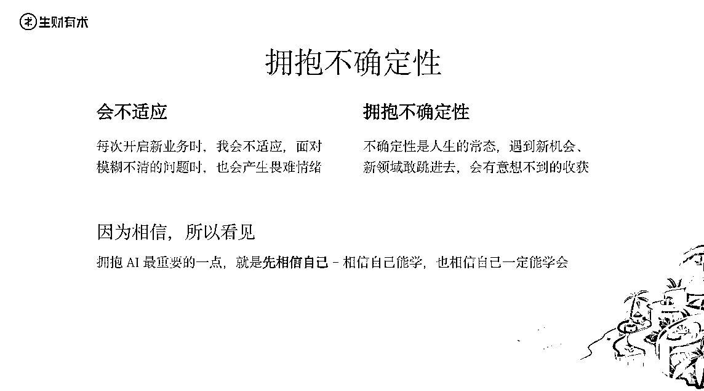
最近因为工作调整，我集中看了不少圈子里关于 AI 的精华内容和风向标。发现大家会聊这些问题：
所以今天，我想作为生财的 AI 课代表，把看到的、听到的、感受到的 AI 信息，以及生财团队在 AI 领域的动作，分享给大家。
主要是以下几个模块的内容：
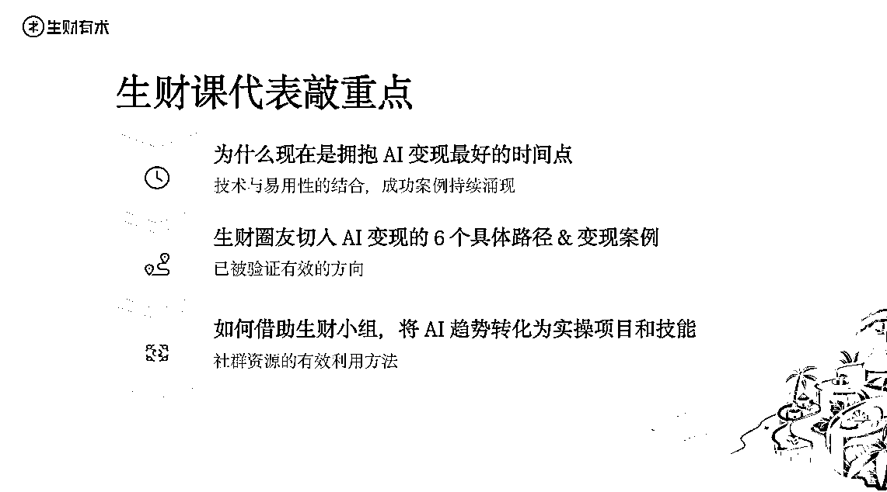
AI 是每个人都需要关注的机会，这应该是咱们圈友的共识了。
我想强调的是：现在恰恰是普通人用 AI 赚钱的最佳时机。
前 2 年，AI 工具还不够成熟，普通人不好驾驭。当时需要大量提示词工程知识和技术背景，才能让 AI 产出有真正价值的内容。
但是现在，随着 DeepSeek 等新一代 AI 模型的上线，普通人上手 AI、用好 AI 的难度大大降低。你只需会提问，就能获得专业水准的输出 ——这是历史上第一次技术与易用性的完美结合。
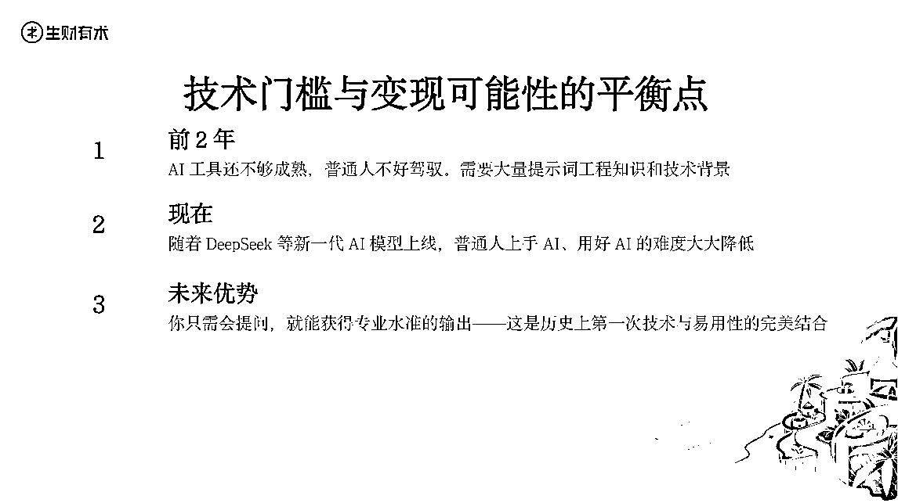
过去一年，生财有术涌现了不少圈友的 AI 案例：
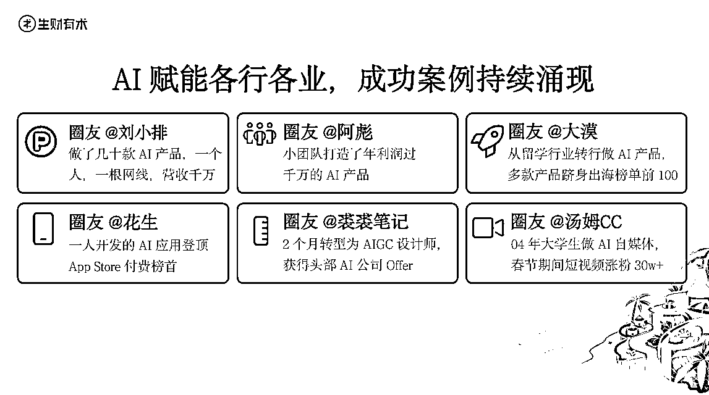
重要的是，这些例子中有不少人也是非技术背景，从 0 开始进入 AI 行业的普通人。
AI 时代的核心逻辑是：你一个人可以变成十个人，可以认知更好，可以成长更快，可以赚更多钱。
从 ChatGPT 的推出算起，AI 的商业化才刚刚开始。其实最好的入场时间不是第一批，而是当成功案例已经跑出来、确定性增强的时候 —— 这个时间点就是现在。
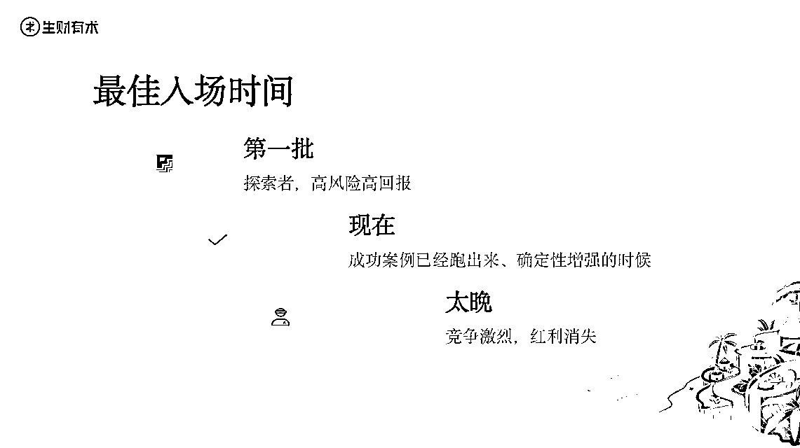
现在拥抱 AI，就是拥抱未来。
聊到这里，可能会有圈友说：是的，我现在也想用 AI 赚钱，但是具体应该怎么做呢？
接下来，我会给大家分享 6 个已经被验证过的 AI 变现路径，这里的已被验证是指：
你可以对照一下自己的情况，看看哪个最适合你。
先来看第一个被验证的 AI 变现路径 —— AI 自媒体
一句话介绍这个项目 —— 做普及“AI 相关知识”的内容创作者，成为 AI 产品、新闻、资讯的传播渠道。
这个项目在最近这段时间集体爆发，过年期间，随手刷刷视频号，都能看到大量 AI 主题的视频或者直播。当时，简单的 DeepSeek 提示词用法、隐藏提问技巧、用 AI 写脚本、朋友圈文案、做各种业务的视频，都能轻松获得大量流量。
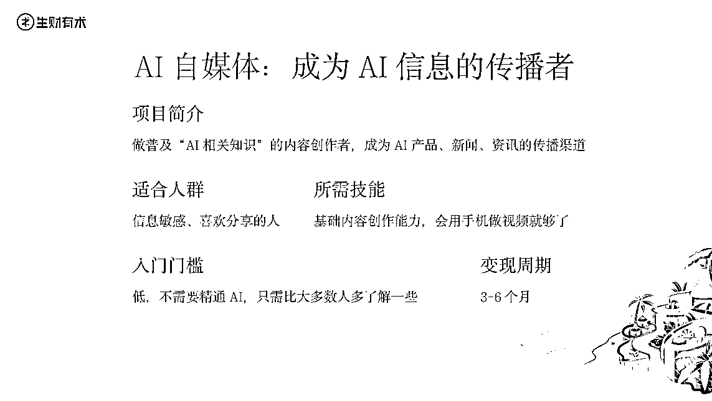
虽然已经火热了一段时间，但我想说，现在仍然是入局 AI 自媒体的好时机。
给大家透露一些内部消息：
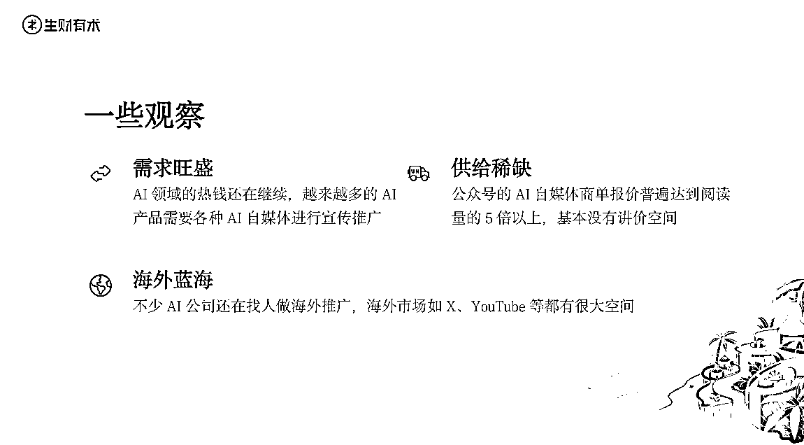
已经有不少圈友在 AI 自媒体领域中拿到结果了，你可以在生财小组中看到很多类似案例——
圈友@Ann，最早一批做 AI 自媒体的成员，也是 3 月航海的教练。她偶然发现豆包用于检查作业、和小朋友互动，就在抖音发了几条相关视频，没咋想变现。结果发了 4 条后，就有广告主主动找上门。
之后半年，她合作的品牌包括豆包、九章随时问、纳米 AI 搜索、AI Mate、猫箱、豆包爱学、即梦、夸克、今日头条、百度，还有一些小程序等。她说：“去年 10 月之前，我的内容与 AI 领域并无关联。所以，我想给大家一些信心：如果我可以做到，你们也一定可以！”
@Ann的星球帖分享：《【项目实操】AI教育+抖音，1个月接7条广告过程分享》

做 AI 自媒体，你觉得至少要有多少个粉丝你才能接广告？
答案是 20+ 个。
圈友@蘑菇，她小试牛刀发布了第一条视频，就收获了 300+ 的赞藏，还接到了第一个商单。她接广告的时候，粉丝也就 20 多个。
很多人以为粉丝少就接不了单，其实这是一个误区。蘑菇说积累大量粉丝、打造个人 IP、运营社群这条路对她来说太长了，所以从一开始，她就明确了自己的定位：不做 IP号，只做接广号。后面蘑菇又发了 7 条视频，其中 3 条都是商单。
@蘑菇的星球帖分享：《做AI自媒体账号发布第一条视频后接到了商单》
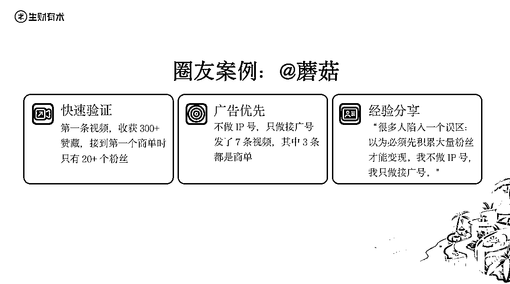
圈友@汤姆CC，是一位 04 年的大学生，他在春节期间制作 DeepSeek 系列视频，后续直接涨了 30w 粉，一个多月有 50+ 个商单找到他。
当时 DeepSeek 很卡，全网都在讲怎么流畅使用。当很多人都做这个主题后，他转做 DeepSeek 的具体使用技巧和教程，出了好几个百万、千万的爆款视频。
因为视频偏向于提效科普，后续还有人联系他做 AI 提效主题的线下课程，变现方法不至于商单。
@汤姆CC的星球帖分享：《春节期间制作DeepSeek系列视频：从0到1的AI自媒体成长经验分享》
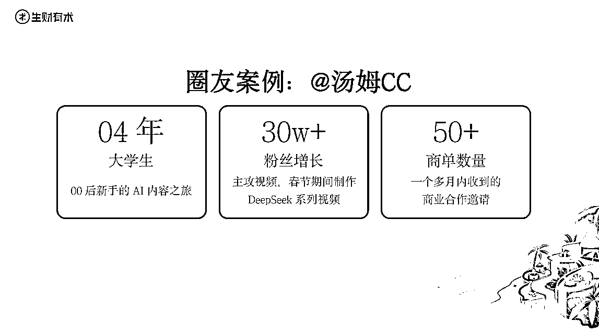
在知识爆炸的时代，信息的过滤器比生产者更值钱。做 AI 自媒体，你不需要是 AI 专家，只需要比受众多懂那么一点点就够了。
因为很看好这个方向，我们也和圈友合作成立了一家 AI MCN。如果你对这个项目感兴趣，可以大胆实操起来，未来我们会通过 AI MCN 拿到稳定的商单，对接给咱们圈友，让大家专注把内容做好。
如果说 23 年最多的钱还是流向了大模型公司，那么从 24 年后半年开始，越来越多投资团队把目光转向了 AI 应用。
去年 11 月，亦仁的超级标就推出了“AI 应用”项目。
简单来说，AI 应用就是借助 AI 编程、AI 设计等工具快速实现的 AI 产品，包括 AI 网站、AI APP、AI 插件等。
很多人听到这些词，会觉得，“我不懂技术，和这些事情应该没有关系吧”，但正如小排老师所说，我们已经通过 AI 实现了“技术平权”。
过去开发软件需要专业的编程知识和产品设计能力，成本很高。但现在，AI 工具让技术门槛大幅降低，不懂技术的人通过一定学习，也能独立完成 AI 应用开发。
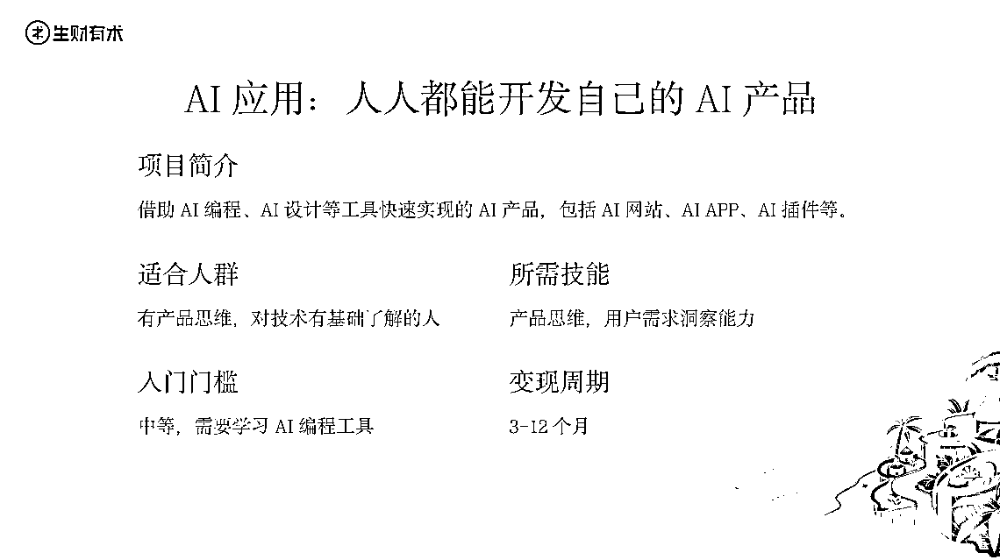
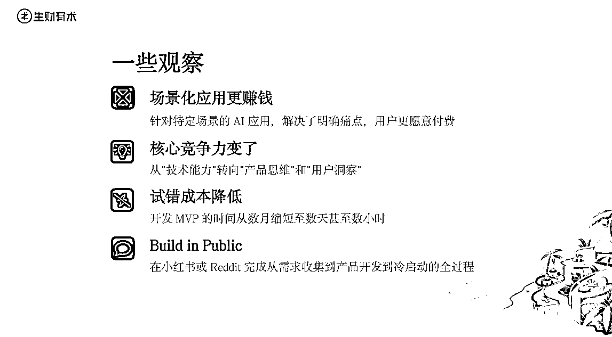
小红书最近推出了一个活动“独立开发者大赛”。你可以看到不少 AI 产品，在小红书平台完成了商业的完整闭环。比如想到需求时，先去小红书搜索下看看多少人关注；推出产品前发个小红书，看看有没有人感兴趣；推出后再告诉姐妹们我已经做出来了。这样产品就自然完成了第一波冷启动，甚至有后续自传播的发生。
关于 Build in Redbook，圈友@花生 的“小猫补光灯”是一个典型案例。
有一次，他女朋友在剪辑视频时提到，需要给女生做补光的卡片，然后花生就去小红书搜索“补光”，发现确实有很多数据高的爆款笔记。他意识到，这是一个真实高频的需求，于是借助 Cursor 工具快速开发并发布了这款产品。
App上线后，花生去小红书分享了下，其中一条笔记获得了 118 万的阅读、7.3 万的赞，并获得了超 3 万的 APP 下载量。这个“Build in 小红书”的产品最高时达到 AppStore 分类排行榜第 20 名；后续推出的付费版“小猫补光灯Pro”，更是在短短 6 小时内登顶所有付费应用榜第 1 名。
@花生的星球帖分享：《AI博主花生分享小红书爆火App开发经历》
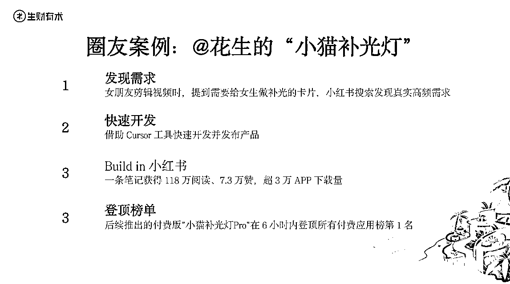
关于AI 应用，还有个大家熟悉的头部榜样，刘小排老师。
前段时间，小排老师上了程前朋友圈的访谈，我现在一想到他，就有一个非常具象的画面浮现出来：一个人，一根网线，N 个 AI 员工，千万营收。
他开启 AI 创业后，发布的第一款产品叫 Raphael AI，从 0 起步，到超过 100 万月活用户，只用了一个月的时间，还拿下了全球 AIGC 产品增长榜的 15 名。用户全靠自传播，没做 SEO，也没做任何付费推广。一个人用 AI 工具实现了一切。
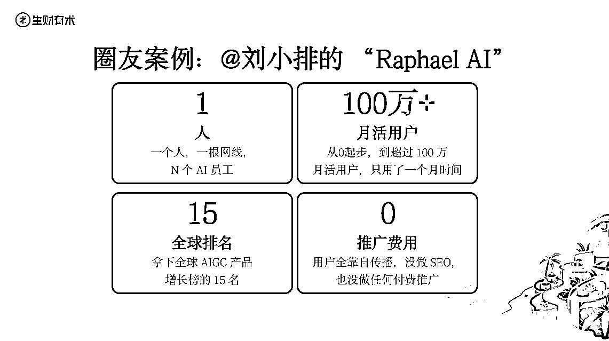
很多人困惑，AI 绘画已经是红海领域了啊，小排老师的产品怎么实现爆发式增长的。核心在于它“让一大群不会用 AI 画图的用户、突然就会用 AI 画图了”。
透露一嘴啊，小排老师正在和我们合作，筹备 AI 出海产品课程；还将作为 SCAI 实验室的联合创始人，孵化一批做 AI 应用的圈友。
详情可以看许老师最近发布的招募帖：《SCAI实验室正式开放申请》
一个“只要有想法，就能做产品赚钱”的时代，真的来了。
过去一两年，AI 模态模型能力持续加强，文本、图像、语音、视频生成质量都有了质的飞跃。
尤其是视频模型，发展很迅猛，国内的玩家比如快手的可灵，Mini Max 的海螺，字节的即梦等，视频模型在国际上都处于领先位置。这大大降低了优质内容制作的门槛，普通人也能通过 AI 工具创建高质量视频。
在这样的背景下，适合普通人入局的第三个 AI 方向，AI 内容出海之 YouTube Shorts 就出来了。
一句话介绍这个项目 —— 利用 AI 生成视频内容，发布到 YouTube 和 Shorts 等平台，从中获取广告分成收益。
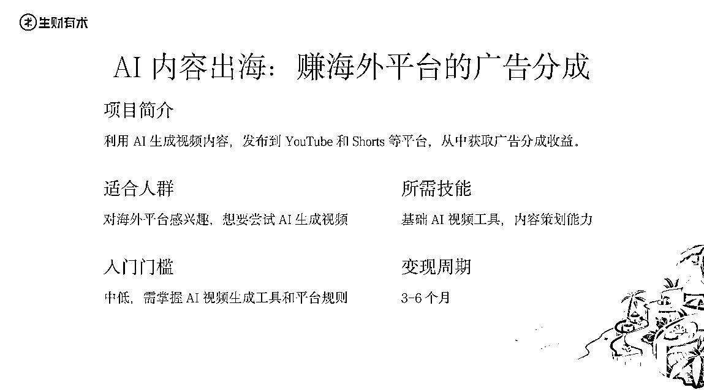
注：此部分信息源自生财有术 YouTube 实战深海圈手册。
去年 12 月，生财有术组织了一场有 3000+ 人参与的 YouTube Shorts 航海活动，后续又推出了 YouTube 深海圈产品，经过几个月时间，已经涌现出一批成功案例：
YouTube Shorts 小组直达链接：https://scys.com/groupV2/164
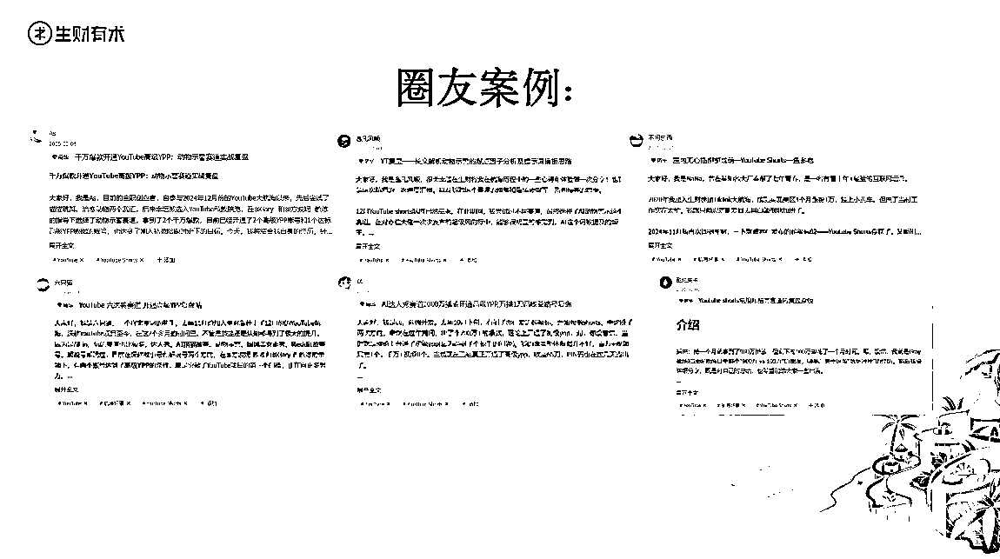
借助 AI，内容出海的可能性被极大扩展。今天的一个视频，可能连接的是全球数百万观众和广告主的钱包。
值得一提的是，深海圈的主教练之一 @Gary 老师，是在生财有术看到 AI Shorts 这个项目后才开始实践的。后面他在社群分享自己的实操内容，被评为精华帖，成为传术师，12 月底来杭州参加了传术师线下见面会，被亦仁看见。
然后航海负责人邀请他参与私教陪跑，做出来的成绩非常好，实现了人均 YPP，现在我们围绕 YouTube 深海圈，也在进一步的合作中。
@Gary的星球帖分享：《致未来黑暗中的我，三个月以来的创业感悟：分享、链接、“弱关系”的贵人和愿力》
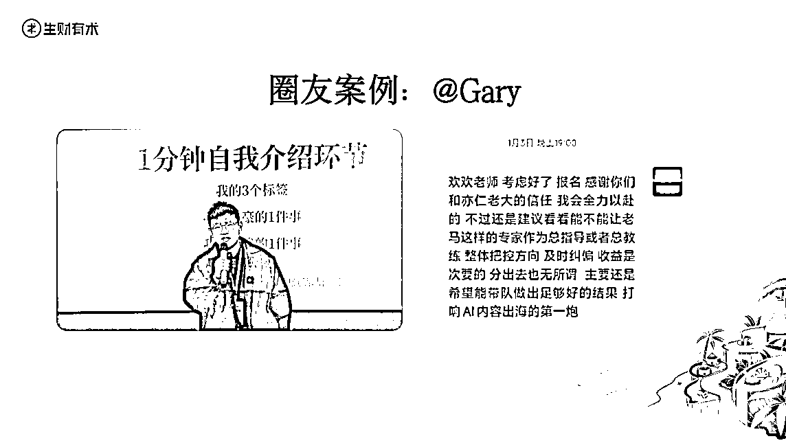
今年生财有术有一个关键词叫"看见”。我们会通过一些方式，比如说团队成员来线下见面会，比如#生财朋友圈专栏运营，再比如鱼丸头像换成真人……让更多人被看见。
我觉得大家也可以通过一些方式，包括主动去做分享，主动参与活动，主动在各种能够留下痕迹的地方让自己被看见，这样就有了更多的可能性。
很多圈友第一次了解 AI，可能是从 AI 绘画开始。早在 21 年 12 月，就有圈友分享了一个 AI 绘画工具。
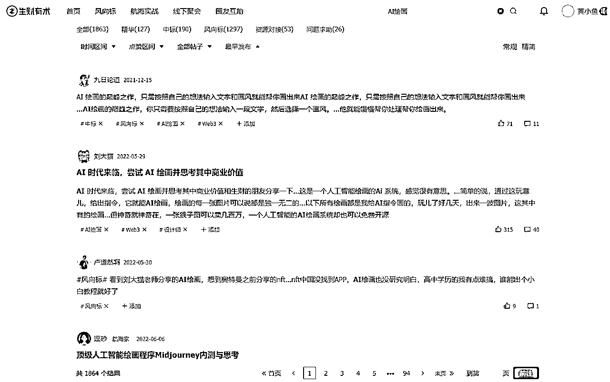
围绕 AI 绘画，后续衍生出了一系列 AI 服务，比如：
说白了，AI 服务就是，当你学习并掌握 AI 技能之后，可以通过为他人提供各类 AI 相关服务获取收益。
AI 服务的延展性非常广，大家可以留心身边的各个需求场景，很容易找到一个快速切入的需求点，掌握对应的的技能变现。
在闲鱼、淘宝上搜索“AI 代 X”，也能看到非常多成熟的、被验证的服务需求。
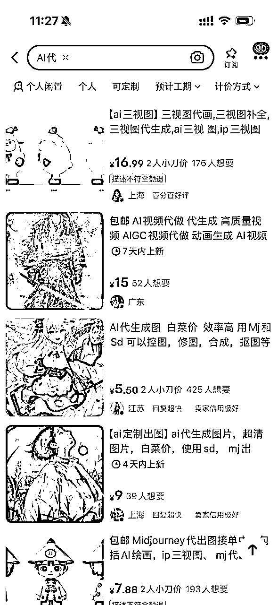
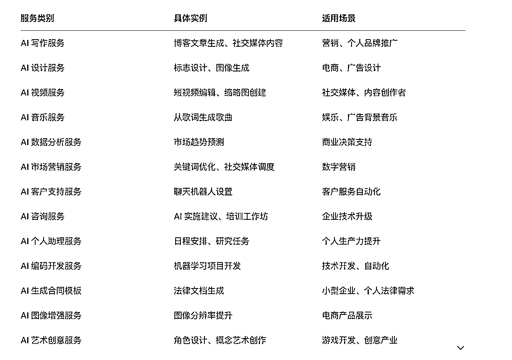
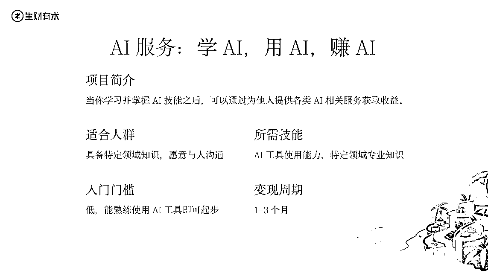
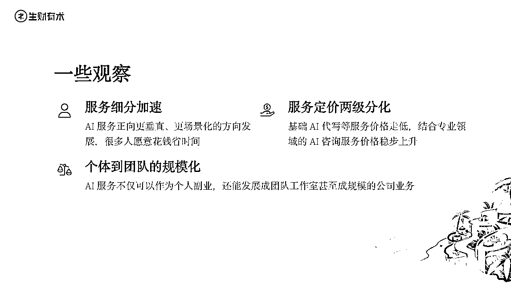
我在生财小组内，同样看到了非常多通过 AI 服务赚到可观收益的案例。
比如 5 年老圈友@李白。他是一名工作 7 年的产品经理，跟着航海开始做 AI 代写，短短 2 个多月就获得了 4 万元多的收益。
他的经历很适合大家参考。从淘宝写手起步，在淘宝搜索“写作”、“文章”等关键词，向排名靠前的商家表明应聘意愿。在这个过程中，他持续锻炼能力，建立了标准化模板，真的实现了边学边赚钱的状态；
在专业形象逐步打造起来之后，2 周后，他就开始运营自己的闲鱼店铺，将重心转向自营流量，独立承接起订单。
至此，完成流量、产品、转化的全部闭环。
@李白的星球帖分享：《新人入局AI代写2个月收益4w+保姆级分享》
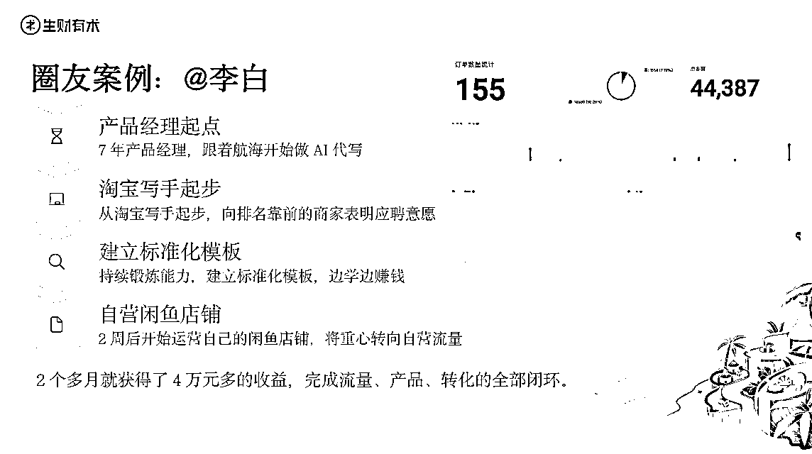
圈友@Daemon，在风向标看到有人卖 coze 工作流，想到自己作为产品经理，逻辑架构还不错。
虽然是代码小白，但是完全可以借助大模型完成代码开发，至此踏上了智能体开发之路，用 AI 工具撬动了 2000+ 的智能体订单。
@Daemon的星球帖分享：《代码小白借助AI工具拿下2000+的智能体订单》
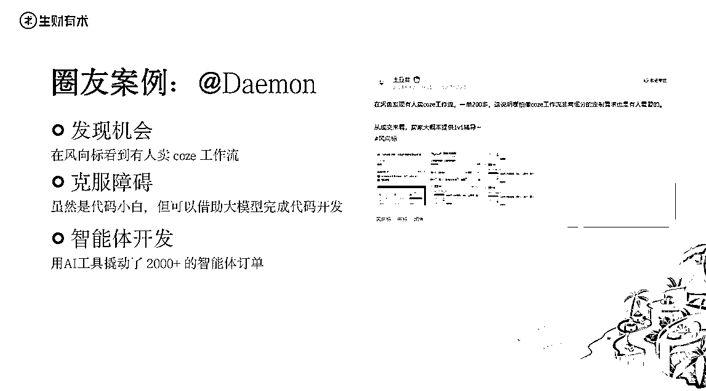
除了直接变现，习得 AI 技能还能帮你拿到更好的工作机会。圈友@裘裘笔记，之前是短视频老师，看到 AI 对传统设计行业的冲击后，决定放弃稳定工作转型 AIGC 设计师。
她在短短 2 个月里，经历了 3 个重要节点：
@裘裘笔记的星球帖分享：《两个月从短视频老师到 AIGC 设计师，我的经验复盘》
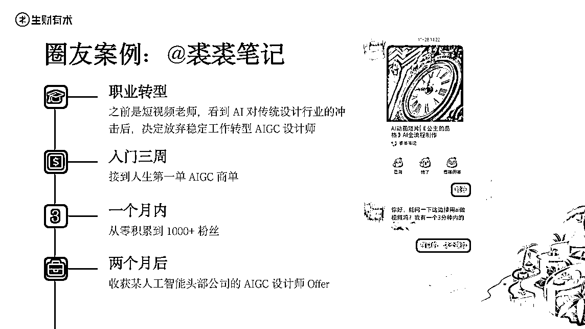
AI 服务不仅是技术能力的体现，更是专业领域知识与服务意识的综合竞争。最终胜出的不是谁会用 AI，而是谁能用 AI 解决真实的商业问题。
剪映 & Capcut 的产品经理说：“大模型加上开源平台，让 ComfyUI、Coze 这样的平台成为创作利器。很多内容创作者可以通过节点，自由搭建和封装工作流，满足各种需求，更高效地进行内容创作。”
这就是为什么你会在生财小组里看到很多“AI + 小红书”、“AI + 公众号”、“AI + 视频号”的玩法，大家都在用 AI 工作流把效率提高 10 倍。
一套好的 AI 工作流搭建好后，原本要忙活一两天的工作，现在可能几分钟就搞定了。AI 真的在改变我们工作的方式。
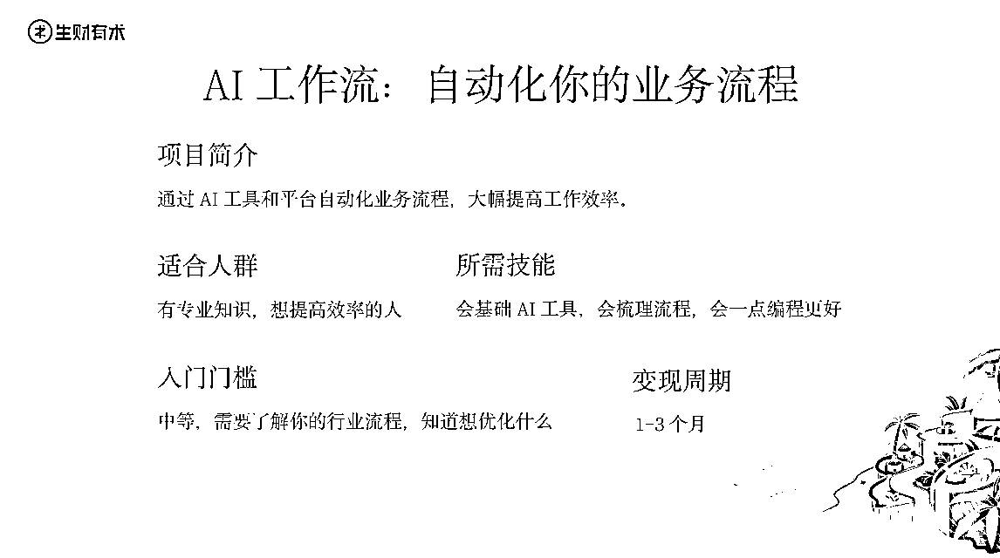
关于 AI 工作流，有几个现象可以关注下：

生财有术圈内，同样有不少 AI 工作流的实践玩家——
圈友@富贵，公司主要做小红书高客单线索业务。她说，“我们并不关心市面上 AI 其他科技发展成什么样，在我的团队里，没有生财力的 AI 都都是虚假狂欢。”
最近她分享了《小红书一键提取图文标题到飞书多维表格》，用快捷指令调用 API 接口执行 Coze 工作流，已经有不少圈友跟着做出来了。
@富贵的星球帖分享：《小红书一键提取图文标题到飞书多维表格》
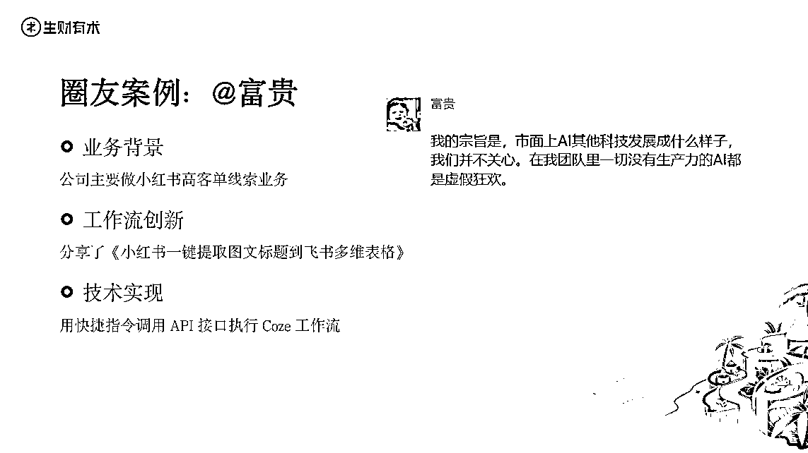
前些天，新一期的航海家俱乐部启动了，航海家@阿甜在群里分享了自己的数字人口播全平台自动更新工作流。
她老公给他搭建了一整套工作流：首先用工具去抓热榜内容，看看现在什么样的话题能够引发大家关注；然后把这个内容导入飞书，让飞书给它改写；改写完之后就是用数字人模仿真人去拍摄的视频；视频出来之后自动剪辑，剪辑完之后批量上传。
这套原本要花 1 个多小时的流程，现在 5-10 分钟就能搞定。
分享后，很多航海家愿意付费购买这一整套方案。
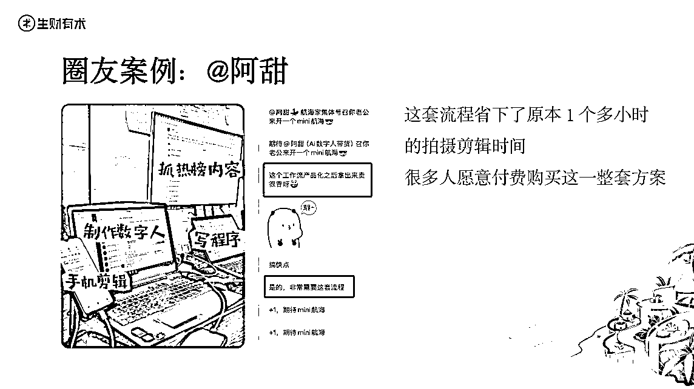
掌握 AI 工作流，告别重复性工作，用 10x 速度实现你的战略落地。
AI 不光改变了内容创作，也在重塑各行各业。对老手来说，AI 能大幅提效；对新手来说，AI 降低了入门门槛。
对生财圈友来说，把自己的业务和 AI 结合，优化产品和服务，是切入 AI 的好方式。
下面以 2 个生财热门领域：电商、IP 为例，分享下可以如何借助 AI 进行业务赋能。
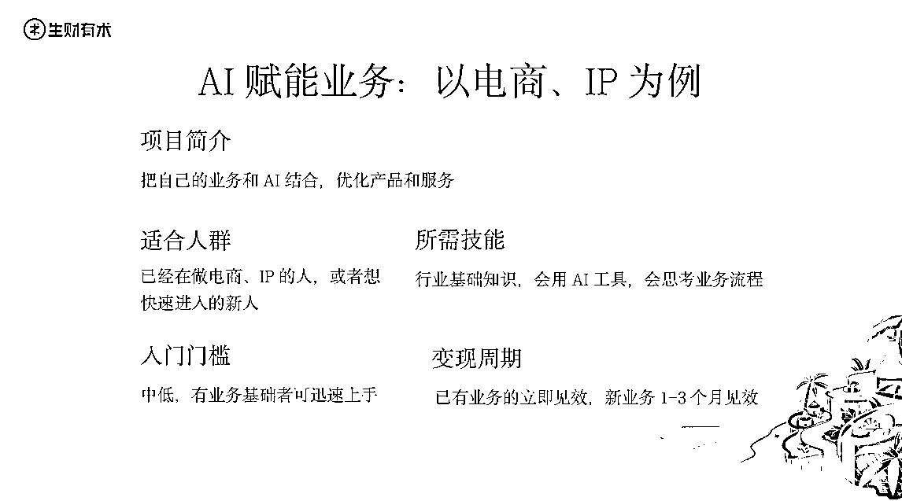
3 月航海中，我们上线了一个选题“AI 赋能电商”。航海手册里面有几个非常明确的场景：
这些操作大大缩短了产品上新周期。
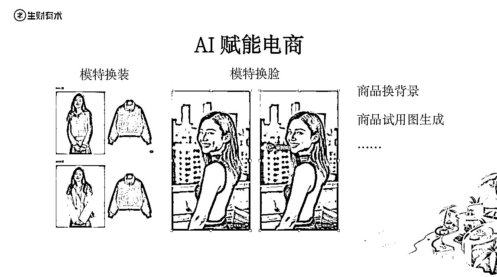
现在每周在生财有术视频号上，生财有术的合伙人坤汀也会对谈一些 AI 领域的实践高手，前段时间就对话了国内 AI +电商领域的头部武彬老板。
AI 赋能电商已经渗透到方方面面了，从选品，到关键词，到 SEO，到内容，到营销……每个环节都可以借助 AI 提效。
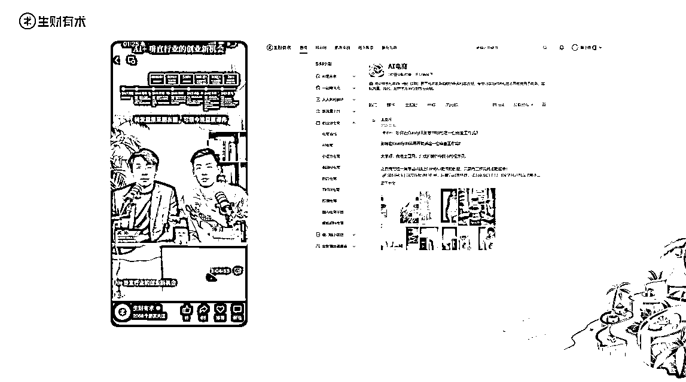
生财小组中，单独有个模块叫“AI 电商”，感兴趣的圈友也可以去看看这里的内容，感受一下。
3 月航海还有个选题叫“AI 赋能 IP”。
在生财有术，我们认为大多数个体都要做的事情，就是 IP。现在有很多企业家，比如雷军、周鸿祎、江南春等，都在做自己的老板 IP。
打造 IP 是成本最低、效率最高的用户信任建立方式。 在这个人人皆可做 IP 的时代，AI 的出现，也大大降低了普通人做 IP 的门槛。
很多做 IP 的时候会有个困惑即怎么定位，这里其实就可以请教 AI，告诉它你的诉求是什么？你有什么优势……在不断对话过程中，就有机会找到适合的定位。
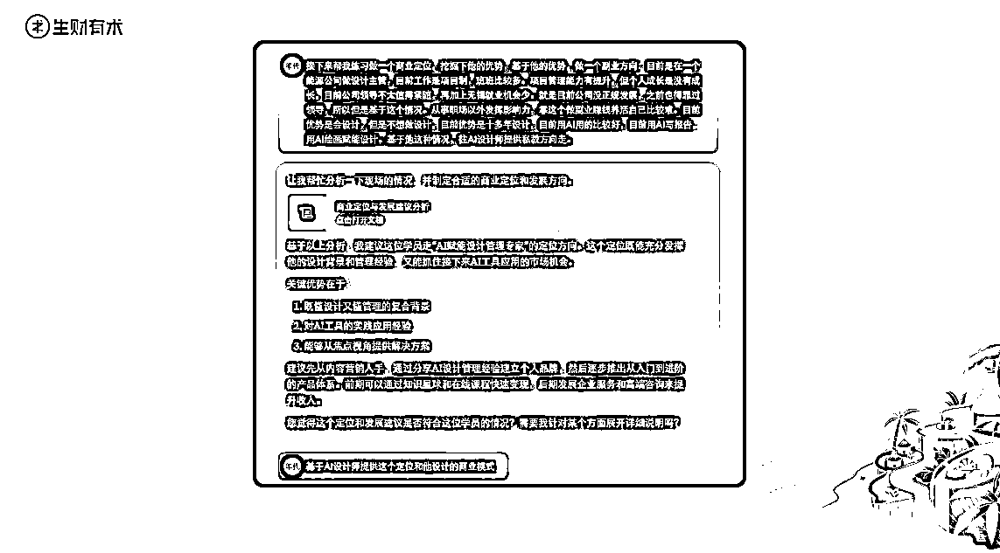
除此之外，你还可以借助 AI 梳理产品，用 AI 提高内容创作效率，航海手册中也罗列了不少场景 ——
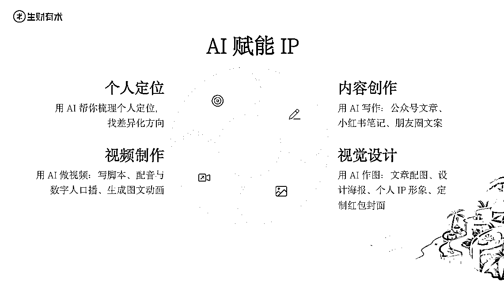
以前每天吭哧吭哧写 10 条朋友圈已经非常了不起，现在通过 AI 你可以轻松产出 30-50 条优质内容，而且质量普遍比手搓好。
未来商业竞争的核心，不是谁更努力，而是谁能更好地用 AI 工具重塑业务。落后者将不得不用 10 倍的努力，去追赶先行者用 AI 带来的 100 倍效率。
总结一下：
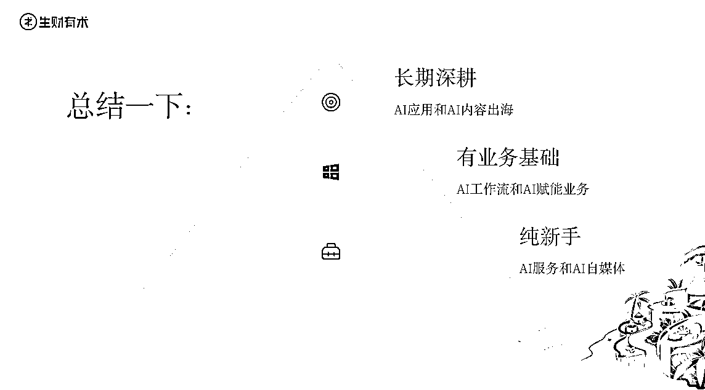
说完路径和案例后，我想从官方视角画个重点，告诉大家作为圈友，如何利用生财小组，把 AI 趋势变成实实在在的能力和收入。
生财有术有不少“黑话”，其中有一句是这么说的：“江湖赚钱看生财，生财赚钱看风向标”。
很多时候信息差就是钱，生财 AI 风向标，能让你更早发现有价值的信号。
大家日常可以进入生财小组中的“AI 全部”板块，感知当下潮水的涌动。前面我提到的案例中，比如Daemon，就是看到风向标中的案例，接到了自己的第一个 AI 服务单子。
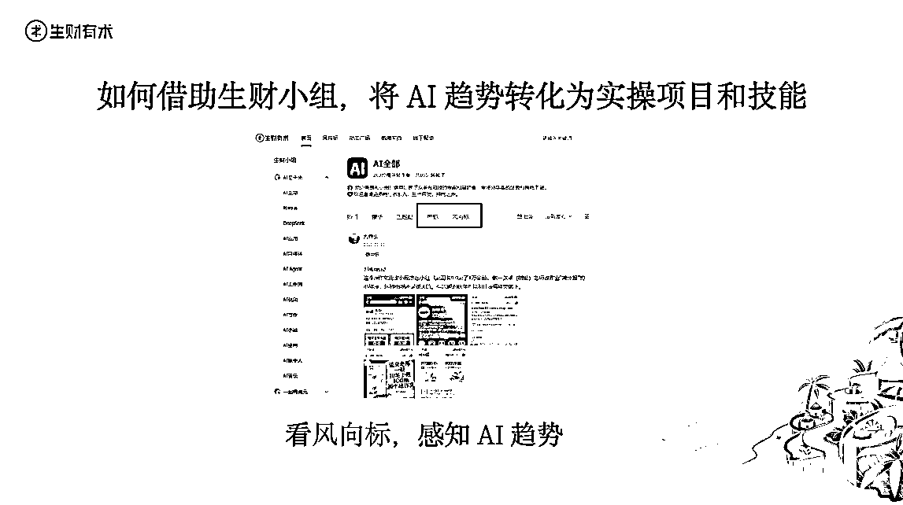
时间紧的圈友，可以直接锁定亦仁发布的 #超级标。
“不需要很多成本，一万块差不多，多一点十万八万，反正不是要投入很多钱的那种。通过一个具体的信息差或者机会，小团队或者能力不差的个体，努力干有机会干到 100 万甚至更多。”
今天我们分享的几个 AI 方向，也基本都是亦仁认证的 #超级标。不少圈友，也都是看到超级标直接入场，拿到了很不错的结果。
之前在星球看内容时，一个问题是各个主题的信息都放在了一起。
所以我们通过生财小组，把不同的主题内容进行了分类，你进入生财 AI 小组，看到的全部都是 AI 相关的内容。
集中地看这种聚合类信息的好处是，可以帮你快速建立自己的框架，形成体感。
比如生财联合办公空间的负责人许老师，看完小组内容后，在找新的项目方向时，就可以快速形成自己的判断。
AI 小组内还做了二级分类。热门话题如 Manus、Deepseek，以及一些热门项目如 AI 应用、AI 自媒体、AI 写作等，都有单独的 Tab 栏。
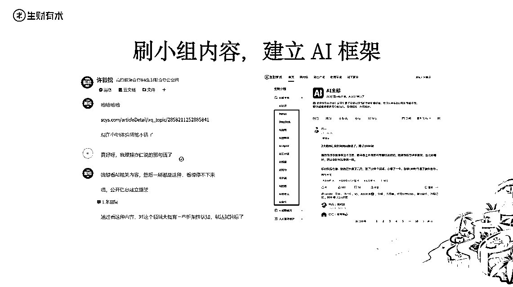
过去这段时间，经过圈友的自发分享、官方发起的 #龙珠悬赏，还有定向约稿，现在 AI 小组里面，已经有了 8790 篇帖子，诞生了 270 位精华帖作者。
强烈建议大家花时间查阅里面的精华内容。
你会发现，很多圈友在借助 AI 进阶时也遇到不少卡点，看看他们对问题的思考和解决方案，会给你带来很大启发。
生财小组里面，不仅有 AI 主题的内容，我们还把所有过往和正在进行的 AI 相关航海做了聚合。
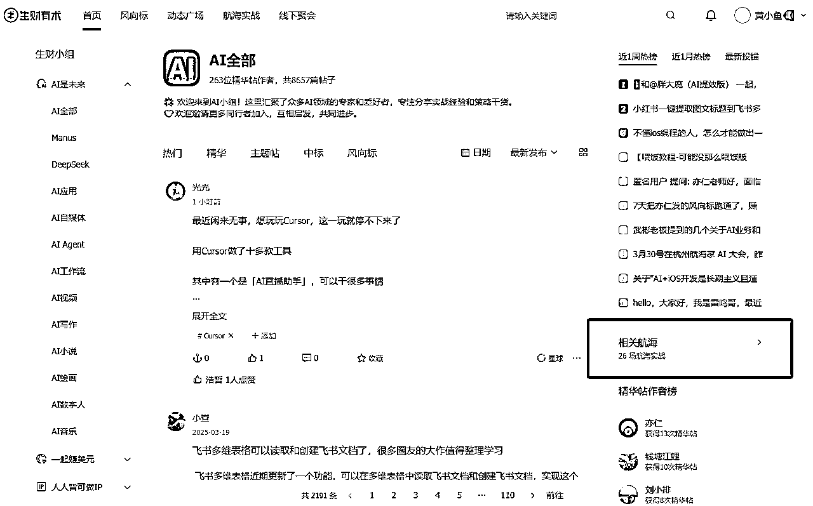
从 22 年11 月第一场“AI 绘画”航海，到“ChatGPT+海外工具”“ChatGPT+自媒体”，再到“Sora”“AI 编程” “AI 特效直播变现”“Coze”“AI 写作”……已有超过 3 万人次的圈友参与到各个 AI 主题的实战活动中。
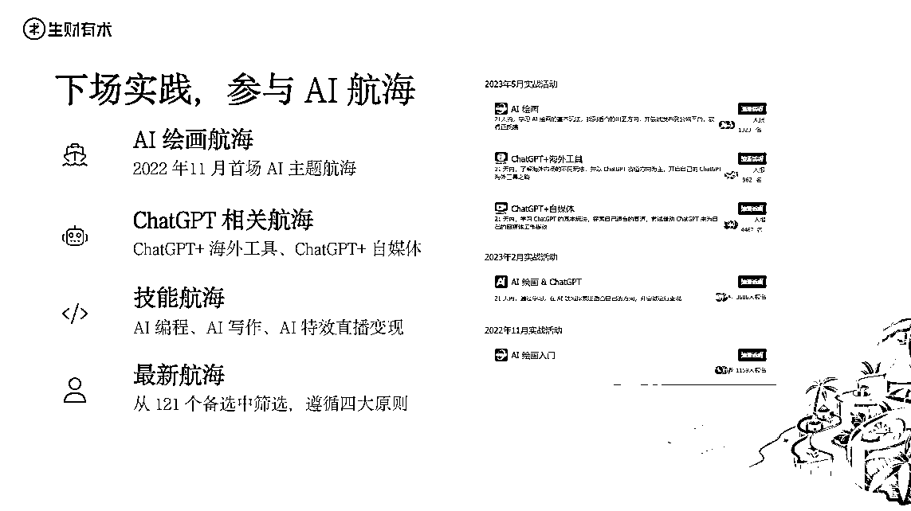
我们认为，在一个正确的方向下持续行动、持续尝试，拿到结果是非常自然的事情。在正确的方向下，这是大前提。
航海就是生财帮你选准方向后，设计一个行动氛围，带大家下场。最新的 3 月航海选题从 121 个备选中筛选，遵循四个原则：空间够大、有10倍潜力、有快速反馈、能低成本切入。
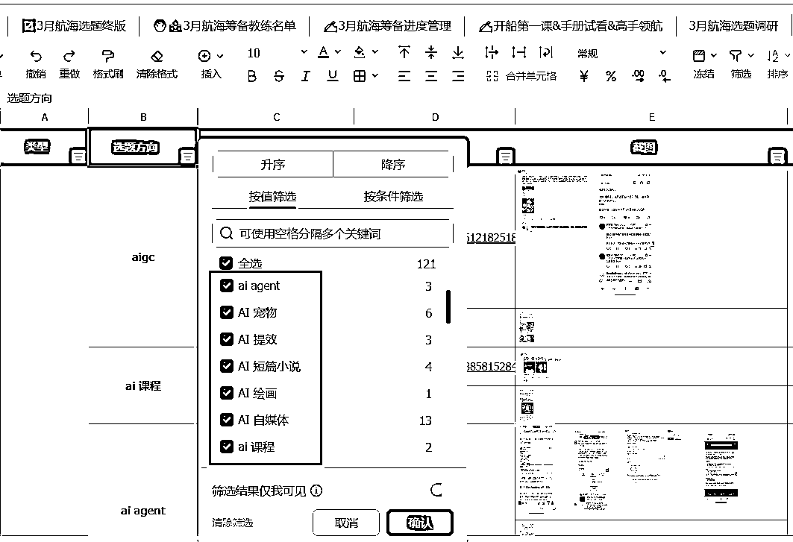
参与航海实战，可以让你通过实际行动提高认知，掌握技能，获取经验，链接圈友和资源，从而在 AI 变现路上走得更稳、更快。
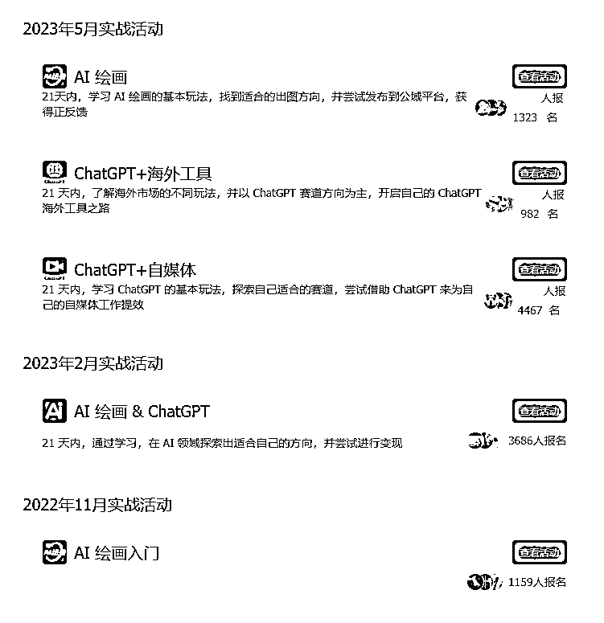
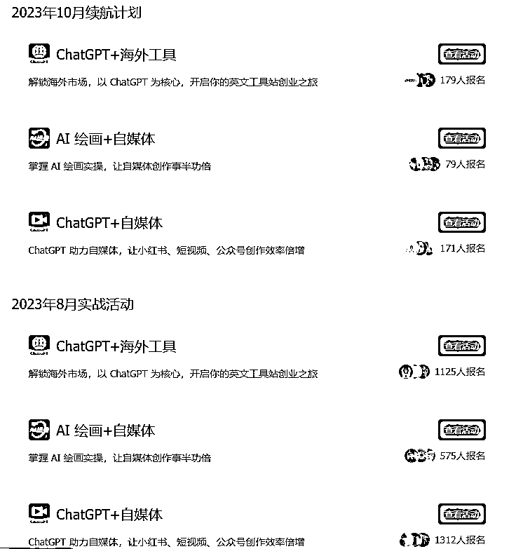
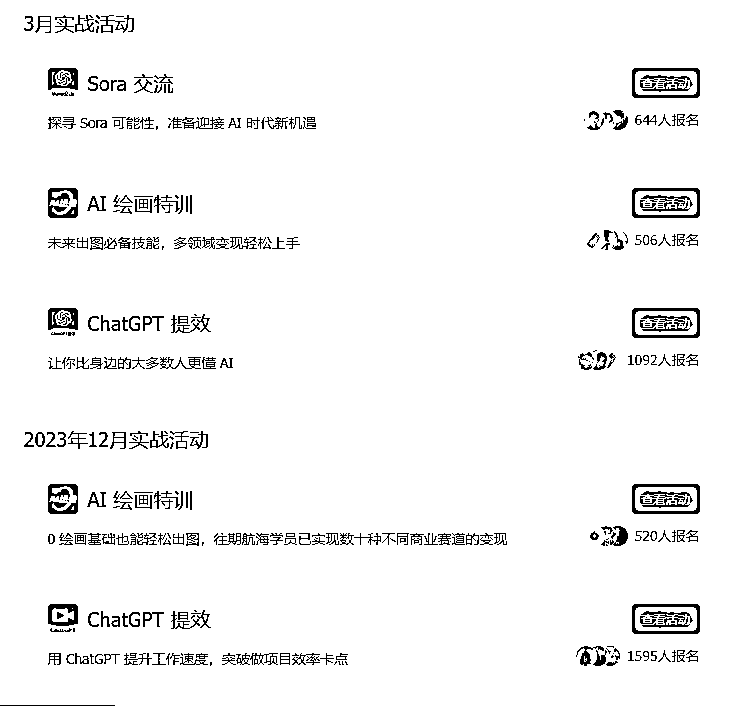
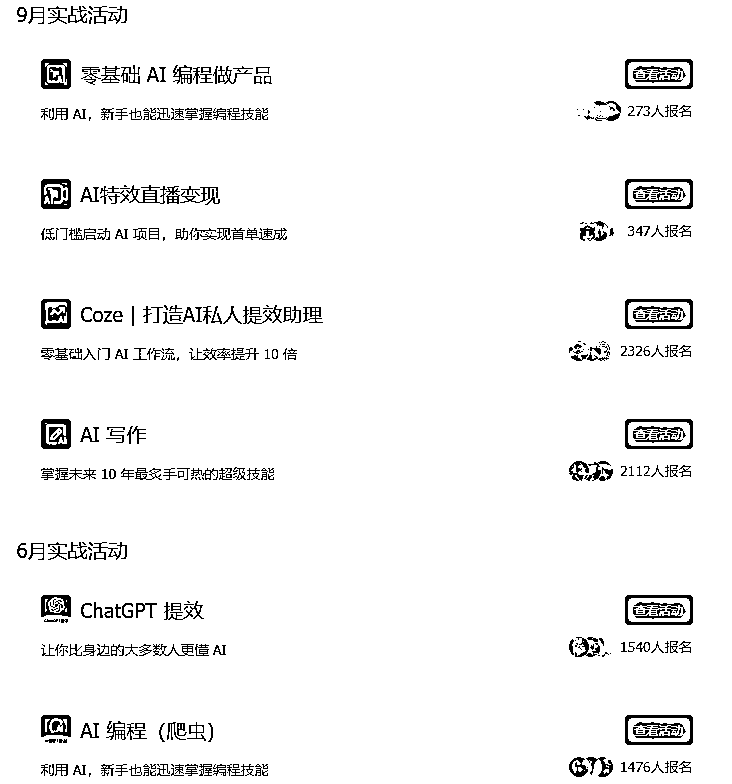
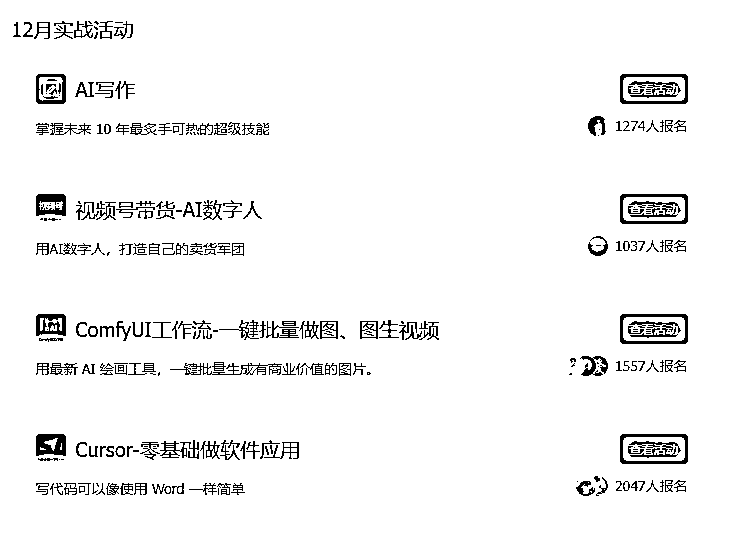
非常重要的一点：当你学习 AI、践行 AI 后完成项目闭环，一定要把整个过程分享到生财有术，让更多人知道你的业务进展。
今天分享的很多案例作者，都是因为输出了优质内容，获得了更多机会。比如 Gary，林悦己的产品被 SCAI 实验室投资，裘裘成为航海家 AI 大会的见面会嘉宾，Ann 担任航海教练……
生财有术也在全力加速拥抱 AI，我们正在规划和成立一个聚集生财有术最牛逼的 AI 使用者的社群 —— AI 传术师俱乐部。
当你在 AI 领域取得一定成果，这个俱乐部将为你提供更深层次的交流和合作机会。
想象一下，一群持续研究 AI 的高手聚在一起，会碰撞出怎样的火花？
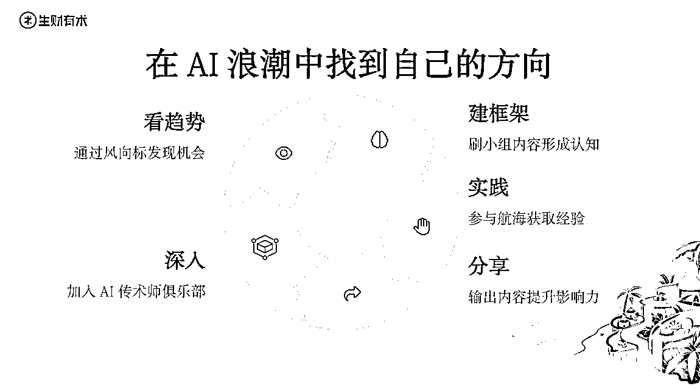
以上就是我今天的全部分享，祝大家都在这波 AI 浪潮中，找到自己的方向。